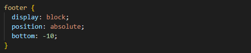
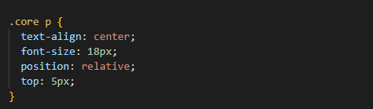
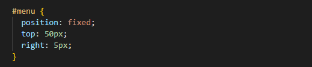

It can feel counter-intuitive using CSS to tell "elements" where to sit on a webpage. We might naturally feel more comfortable using our hands to move things around, and for those who grew up using home computers without learning the command line, this extension of our hand takes the form of a mouse, represented on-screen with a cursor.
Driving the cursor with clicks, we hardly think twice about dragging and dropping things across the screen, like when we move files into new folders, or swords across virtual fruit. Since the development of touch-screens, of course, we literally use our fingers to navigate the items on our screens.
When writing a website, we use a different approach to moving things around. Think about a yoga class, with the instructor guiding their students into new positions. In other words, we can use our words to inform movement; along with our knowledge of 'anatomy'. Except instead of people doing yoga, it is the pixels on the screen, displaying the content just as we've suggested it should display.
You might be familiar with the terms 'head', 'body' and 'footer' in a webpage. These are relevant, as we will discuss.
The core of its anatomy, however, is light. The unit of light we use to measure the area in a screen (or 'viewport') is pixels.
We can define a specific area of pixels by making a block or inline element.
It is these elements which we are guiding into position with our use of the complementary languages, HTML and CSS.
Elements are given familial terms: parent, child, sibling, and generically 'descendent'. Just as your hand is the child of your arm (as in, it is nested in a limb), the limbs are children of the torso, and your fingers are descendents of this anatomical structure.
Websites inherently understand the word 'body' to mean the bulk of the content; likewise, that the 'footer' is the sliver of content at the bottom of the page: but, as I discovered this week, it doesn't always stay at the bottom!
Let's increase our understanding about positioning elements so that the content of our website is always just where we want it to go. Like with any good yoga practice, we're gonna want to stay out of our head(er).
There are five different properties available to position our elements.
In this blog post, we will only focus on the three which are underlined here.

The property 'absolute' can be used to guarantee the placement of your element. In the example above, I instructed the footer to behave as a block element, with the words 'display:block' because I find it the most straightforward type of element to position - and absolute positioning can get quite complicated, quite quickly!
This is largely due to the fact that it removes the element from the flow i.e. the structure that we're building so carefully in our body. As I'm working on the footer, it is the most nether element that I need to place, so I don't need it to flow with the rest of the content.
An absolute element is positioned relative to its parent. In this case, the footer is nested in the body itself so that it doesn't conflict with other styling arrangements in the overall layout of the webpage.
Previously, my footer would fly up the screen when I was scrolling down. With the default 'static' position, it sat at the bottom of the initial view when I opened the page, but that was the wrong thing to be relative to.
To make absolutely sure that there wouldn't be a gap between the footer and the bottom of the page, I gave it a negative value relative to the bottom of the body (its parent element).
Now, nothing in the body will get below it. It's absolutely placed,
right down the bottom.

The property 'relative' is much more flexible than 'absolute'.
In the example above, I am styling the text within a box called "core". The text is written in paragraph tags, so I select it with the 'p'.
No matter what is above the paragraph, I want there to be 5 pixels of space.
If I gave the position the 'absolute' property, it would be removed from the rest of the body structure. This could result in overlapping content, unless I measure and define: the width, height, margin, border, and padding, for everything else in the body, and send them to the left, right, top, or bottom of these paragraphs. That just wouldn't work: the quantity of paragraphs changes the height from page to page, and other children of my 'core' container need to relate to the contained paragraphs.
This relative positioning makes the most sense, and is friendly across screen sizes.

When the position is given the 'fixed' property, it is unaffected by scrolling up and down (or across) the page.
The position is not relative to other elements at all - it becomes relative to the screen, or 'viewport'.
In the example above, I can tell my Menu element to sit 50px from the top of the screen and 5px from the right of the screen at all times, no matter how far down my visitors want to explore.
This is a very effective choice for any navigation function on a website, or your annoying sales funnel.
It's important to understand the different outcomes of these properties so the flow of content on the website fits well together. As you may have realized, the positioning of individual (or the collective 'container' of) elements can have a big impact on all the elements around them.
The absolute property will follow the yoga teacher's instructions, even if that means crashing into the person practicing beside them.
They are out of the flow of the group.
The relative property is more accommodating and flexible; the fingers can be lifted off the ground while the palm of the hand stays flat, even as the hips move backwards. This lets us make specific styling adjustments that stay in the flow with the elements around us.
The fixed property is not positioned with regard to other elements. It will keep its place on the screen no matter where we go, so could occasionally obscure other important content on the page. It's as though someone was doing yoga up in the mezzanine, and since we are recording our class from cameras on the roof, we can't see anyone or anything below the mezzanine. Provided everything needs to be seen, we will accommodate this high-altitude dimension when we frame the shot, by adding space (e.g. with padding) in the general area 'under' where our fixed elements will show up (the top, bottom, left, or right).
When choosing the position property for your elements, think about how much scrolling will take place on the page (if any), whether you're designing mobile-first or for larger screens (or both), and think about the parents to the element you're positioning. Absolute elements are relative to their parent, relative elements are relative to themselves, and fixed elements are relative to the screen. And we're all relatives in the web of life! 😄